---
{
"layout": "note",
"title": "Ch3 Discretization method - part2 ( WRM, FVM)",
"journal": true,
"section": "Study",
"topic": "Computational Fluid Dynamics",
"excerpt": "Ch3 Discretization method - part2 ( WRM, FVM) 전체적인 흐름을 다시 정리해보자. 우리는 물리법칙을 수학식으로 표현하였고, 그 수학식은 손으로는 풀수 없는 편미분 방정식이다. 따라서, 근사해라도 구하",
"classes": "wide",
"permalink": "/blog/mechanical-engineering/computational-fluid-dynamics/ch3-discretization-method-part2-wrm-fvm/",
"study_area": "Mechanical",
"date": "2025-04-14",
"source_url": "https://jeffdissel.tistory.com/m/181",
"header": {
"teaser": "/blog/mechanical-engineering/computational-fluid-dynamics/ch3-discretization-method-part2-wrm-fvm/images/img-001.png"
}
}
---
{% raw %}Ch3 Discretization method - part2 ( WRM, FVM)
전체적인 흐름을 다시 정리해보자.
우리는 물리법칙을 수학식으로 표현하였고,
그 수학식은 손으로는 풀수 없는 편미분 방정식이다.
따라서, 근사해라도 구하기 + 컴퓨터 이용하기를 달성하려고
편미분 방정식을 컴퓨터가 풀수 있는 방정식으로 전환하는게 현재 목표이다.
따라서, 컴퓨터가 계산할 수 있도록 해 공간을 discretize 즉,
연속적인 공간을 구역으로 쪼개었고,
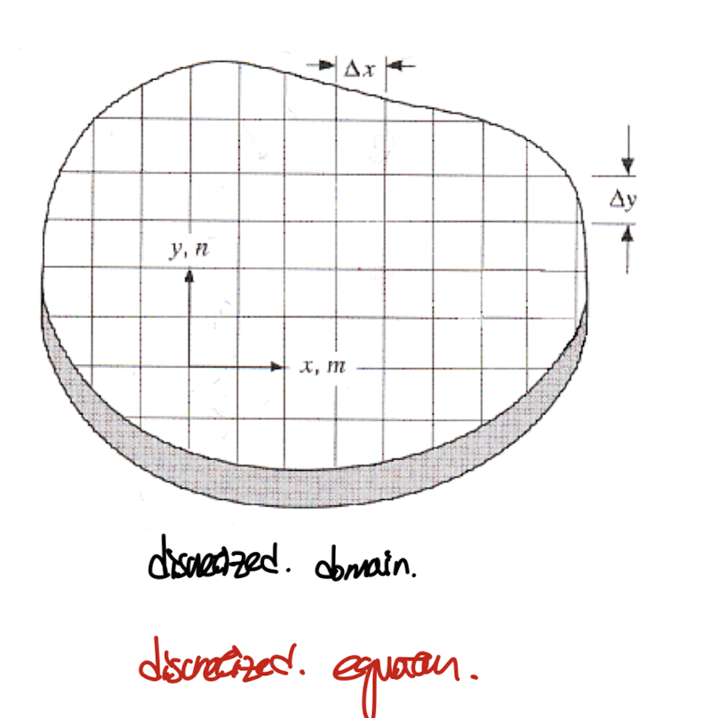
쪼갠 후에 정확히 어떻게 편미분 방정식을
Algebra eq으로 바꾸는 지, 총 4가지 방식이 있었다.
지난 포스터에서 2가지를 다루었고, 이제 남은 2가지를 다루어 보자.
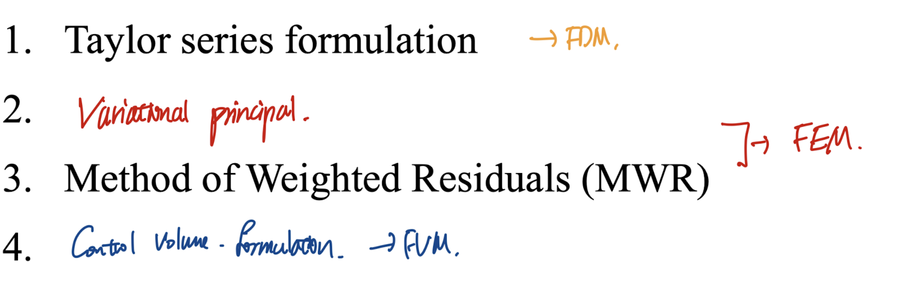
4 methods to derive algebra eq from the diffrential eq.
3. Method of weighted Residual(MWR)
지난시간 the ritz method와 비슷하다.
[example PDE to solve]
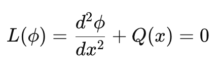
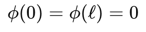
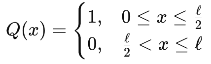
먼저 해를 기저함수(trial function)의 선형조합으로 표현한다
(trial function은 유저가 직접 설정해준 함수 = 미리 아는 함수)
즉 우리가 구할 것은 기저함수 앞의
n개의 계수
들이다.
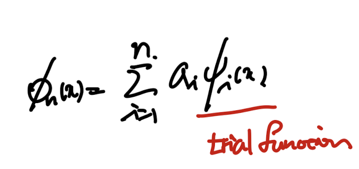
Approximated Solution이라 부르자.
위 Approximated sol을 풀려고 했던 PDE에 대입해주자.
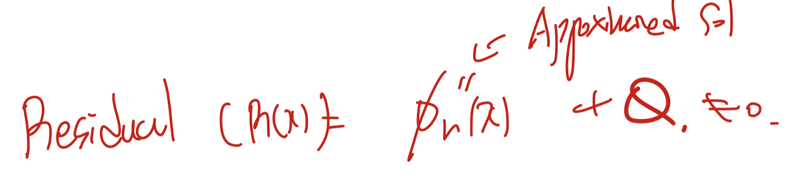
exact sol이 아니기 때문에 0이 분명히 아닐 것이고,
나온 숫자는
residual
즉
잔차라고
정의하자.
(실제는 위식이 0 이어야 하므로, R(x) -> 0 으로 보내는게 목표)
여기서 Method of Weighted Residual의 킥이 나온다.
바로 잔차와 weight function w(x)를 곱하고
전체 domain에 대해서 적분을 진행해준다.
그리고 그 적분값이 0 이 되도록 하는 approximated sol을 구하는 것이다.
(이렇게 도출된 밑의 식을 Weak form of the differential eq이라고 한다, 자세한 것은 FEM블로그에서)
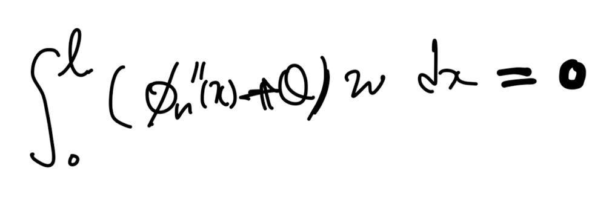
여기서 가장 중요한 핵심은
any w(x) weight function
에 대해서 위 식이 성립한다는 것이다.
(정확히는 수학적으로 제약조건이 존재를 한다,
square integrable 이라는 용어가 사용되지만,
이것도 FEM blog에서 자세하게 다루겠습니다!)
아무튼 any weight function에 대해서 위식이 성립하는 이유는
우리가 구하고자하는 영역에 대해서 (x = (0,L))
밑의 식이 무조건 성립하기 때문이다.
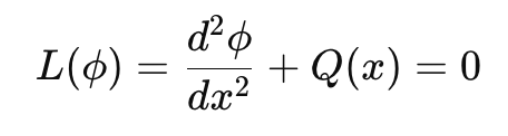
differnetial eq we are trying to solve.
결국 w(x)가 아무리 바뀌어도 x가 정말 해라면, 위 적분식은 0 이어야 하는것.
(이것도 처음 들으면 응??????
아니 뭔 새로운 함수들이 계속해서 등장하냐;;;;
라는 생각이 든다)
이렇게 생각해보자. 우리의 목표는
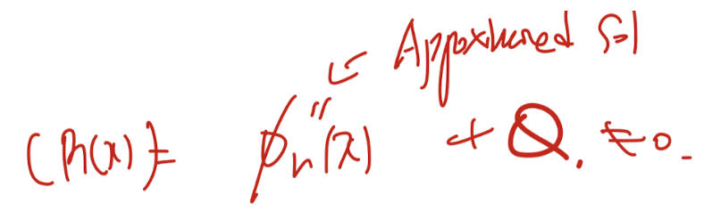
R(x)를 모든 x영역에서 0에 가깝게 하는
Approximated Sol의 계수들을 구하는 것이다.
하지만, 현재 우리가 모든 영역에 대해서 정확히 0이 되도록 하는
exact sol을 구하는 것은 불가능 하다.
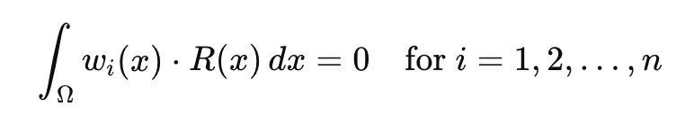
따라서, Residual의 전체영역의 적분값 = 0 이 되도록 식을 세워서,
"전체 domain에 잔차가 평균적으로 0 이 되도록 만들자"
여기서, 그러면 weight function은 왜 곱하는가????
"모든 위치에서 잔차를 똑같이 중요하게 취급하지 말고,
어떤 위치는 더 민감하게, 어떤 위치는 덜 민감하게 보기위함"
즉, 전체 영역을 적분하지만 영역안의 구간별로 residual의 값의 중요도가 다름을
반영하는게 weight function이다.
실제 이 방식을 사용하고,
weight function은 user define function
즉 우리가 설정하는 함수이다.
(총 3가지 weight function 설정 방식을 살펴보자)
1. Galerkin Method
여기서,
weight function
을 basis function 즉,
approximated solution을 구성하는
기저함수로
설정하는 방식을
apprimated solution
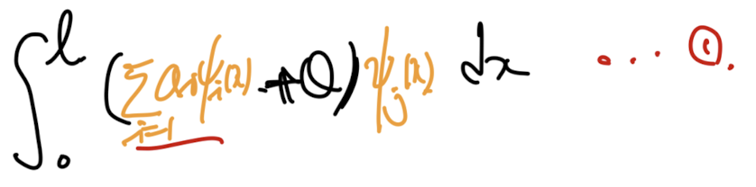
trial fuction = weight function
FEM의 근본적인 방식이다. (Finite element Method)
(아직 블로그 작성은 하지 않았지만, FEM을 따로 작성할 예정,
FEM에서는 basis function을 hat function즉
element마다 hat모양의 linear funciton을 사용한다)
(FEM을 아주 핵심 큰 그림을 설명해주는 영상입니다~)
https://www.youtube.com/watch?v=WwgrAH-IMOk
2. Point collocation Method.
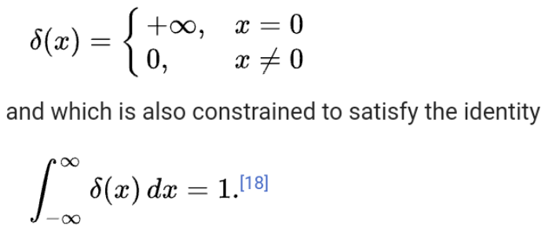
definition of dirac delta function
위 정의된 dirac delta function을 weight function을 갖는 경우가 바로
point collection method이다.
(적분 하면 1 이기 때문에 우리가 풀고자하는 적분함수가 쉽게 변환된다)
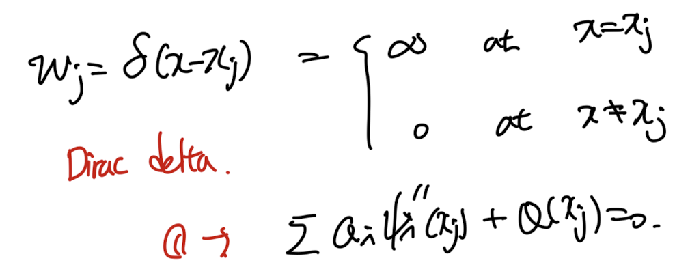
3. Subdomaim method
가장 간단한 방법이자 Finite volume method의 기반이 되는 방식이다.
그냥 우리가 원하는 영역만 weight function = 1, 나머지는 0으로 설정한다.
즉, step function을 적용시킨다.
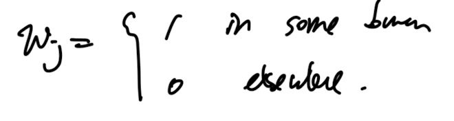
ex) step wise weight function
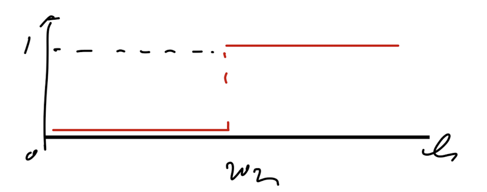
정리해보면 다음 3가지 방식으로 MWR(method of Weight Residual)이 존재한다.
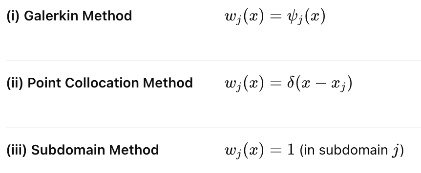
3방식들 중에서,
우리는 Subdomain method를 이용할 것이고,
이는 Finite Volume Method라고 불린다.
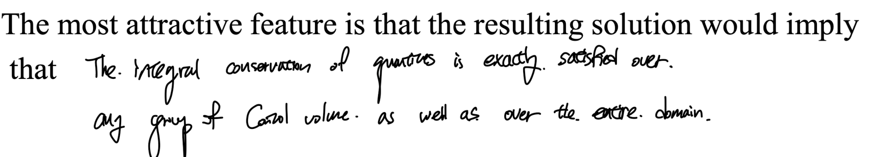
책에서 언급한 이 방식의 큰 킥은 바로,
모든 영역에 대해서 conservation of quantity가 성립한다는 점
이다.
conservation of quantity는 반드시 성립해야하는 물리법칙이며,
이 법칙이 모든 영역 특히 쪼개진 모든 영역에 대해서 성립한다는 것이다.
위 예시를 그대로 subdomain method에 적용하여, 의미를 정확히 이해해보자.
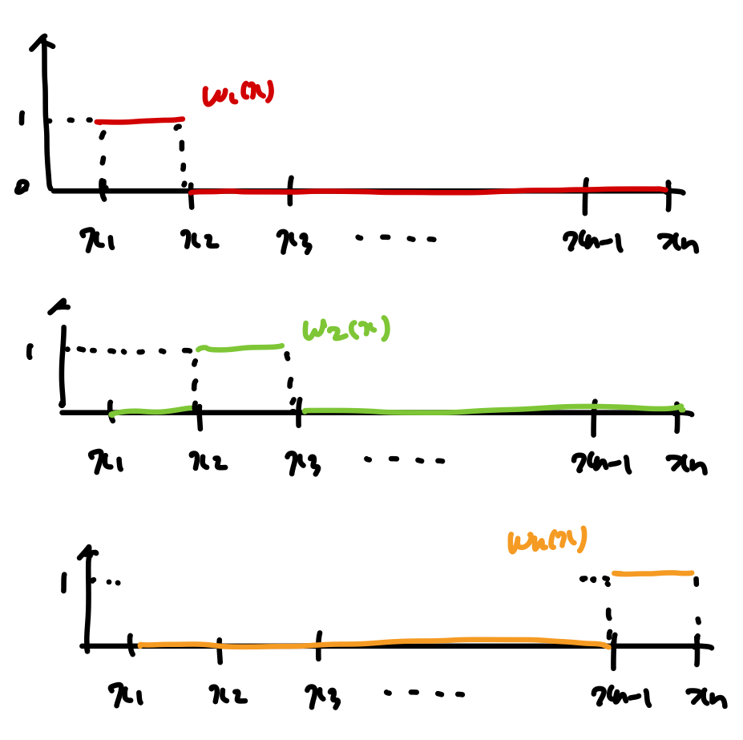
각 영역별로 weight function을 다음과 같이 정의하자(subdomain method definition)
그리고 이를 그대로 우리가 풀려고 했던, MWR식에 대입하자.
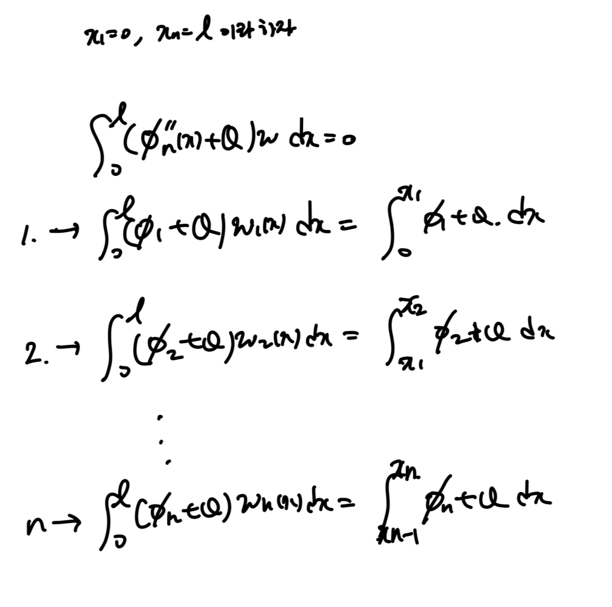
재밌는 것은 discretization했던 영역 각각 적분 of residual = 0 임을 알 수 있다.
즉, 각 영역별로 conservation of quantity 가 만족한다는 것으로
굉장히 큰 장점을 함유하고 있다{% endraw %}